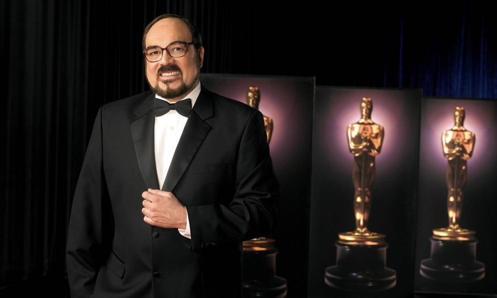

Morre Rubens Ewald Filho, crítico de cinema e 'senhor Oscar', aos 74 anos

RIO - O crítico de cinema Rubens Ewald Filho morreu nesta quarta-feira, aos 74 anos. Ele estava internado no Hospital Samaritano, em Higienópolis, região central de São Paulo, desde maio, quando sofreu um desmaio num shopping da capital e caiu na escada rolante. Dono de uma memória prodigiosa , ele impressionou milhões de telespectadores, ano após ano, durante a transmissão da cerimônia do Oscar , quando enfileirava os nomes de uma infinidade de artistas ligados ao cinema, bem como seus vastos currículos. Para o público brasileiro, uma das grandes atrações do Oscar , além do resultado em si, era conferir a inesgotável cultura cinematográfica de Rubens por meio de comentários não “apenas” enciclopédicos como marcados por tom pessoal inconfundível – conforme evocado no livro “O Oscar e eu” (2003). purus malesuada mi, eget pretium ligula ante sed nisi.
A versatilidade de Rubens fica comprovada na variedade de funções que exerceu ao longo do tempo. Na crítica, terreno em que obteve maior repercussão, escreveu sobre os lançamentos em salas de cinema e também em vídeo, DVD e TV. Levou seu patrimônio cinematográfico para a Globo, Cultura e o mundo da TV por assinatura (HBO, Telecine, TNT). Esteve à frente de alguns dos mais relevantes festivais de cinema do Brasil – como consultor do Projeto Paulínia Magia do Cinema / Polo de Cinema e curador dos festivais de Gramado e Paulínia.
Ator em 'Amor, estranho amor' Parece bastante, mas ele fez bem mais. Acumulou experiência em outros setores. Dirigiu montagens teatrais – como “Hamlet-Gasshô”, apropriação da peça de William Shakespeare, “Querido mundo”, de Miguel Falabella, e “O amante de Lady Chatterley”, de D.H. Lawrence. Trabalhou, raramente, como ator – em “Amor, estranho amor” (1982), de Walter Hugo Khouri.
Escreveu roteiros de dois filmes: “A árvore dos sexos” (1977), em parceria com Carlos Alberto Soffredini, Eugênia de Domênico e Mauricio Rittner; e “Elas são do baralho” (1977), com Roberto Silveira e Adriano Stuart, dirigidos por Silvio de Abreu. Com ele, aliás, assinou a novela “Éramos seis”, adaptação do livro de Maria José Dupré, exibida no SBT.
Não parou por aí: colaborou, de maneira significativa, para a preservação da memória ao assumir a coordenação geral da Coleção Aplauso , composta por biografias de atores e diretores e publicações de roteiros
STF decide manter Lula preso até análise de suspeição de Moro
BRASÍLIA - Por três votos a dois, a Segunda Turma do Supremo Tribunal Federal (STF) decidiu manter o ex-presidente Luiz Inácio Lula da Silva preso. Os advogados do petista questionaram o trabalho do ex-juiz Sergio Moro, hoje ministro da Justiça no governo do presidente Jair Bolsonaro. Para os advogados de Lula, o ex-magistrado, que tocou os processos da Operação Lava-Jato, foi parcial. A decisão é provisória. A análise definitiva do caso ficará para um momento posterior, mas não há previsão ainda de quando será o julgamento. O caso começou a ser analisado em dezembro do ano passado, antes da divulgação das mensagens trocadas entre o então juiz federal Sergio Moro e o procurador Deltan Dallagnol. Segundo o site, Moro deu orientações ao procurador sobre como atuar em processos da Lava-Jato, inclusive em um que investigava o ex-presidente Luiz Inácio Lula da Silva.